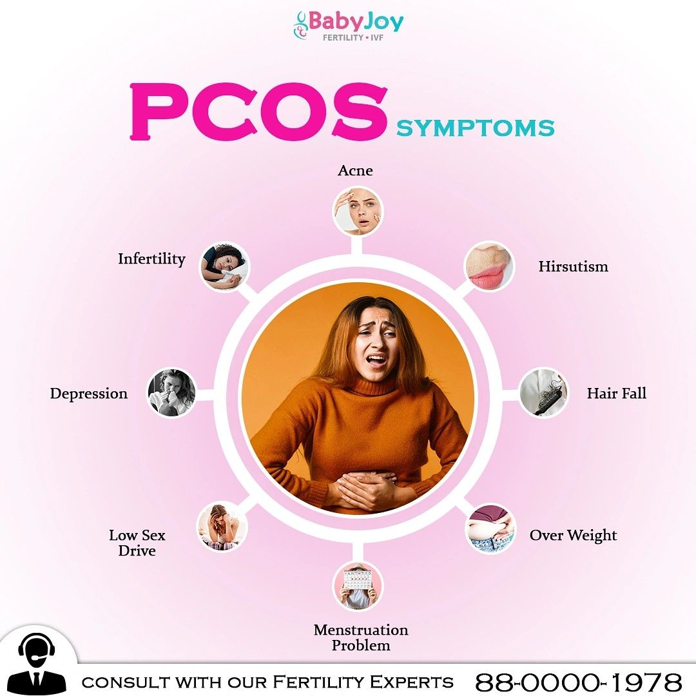

Balance Your Hormones
With the Power of Food.
A science-backed, holistic nutrition programme for PCOS and PCOD that targets insulin resistance, chronic inflammation, and hormonal imbalance — helping you restore regular cycles, manage weight, improve skin, and support fertility naturally.


You Deserve to Know What's Actually Happening
PCOS (Polycystic Ovary Syndrome) affects 1 in 5 women in India — yet it is chronically under-diagnosed, misunderstood, and poorly managed. Most women are handed a prescription and sent home. We believe you deserve more.
At its core, PCOS is driven by insulin resistance and chronic low-grade inflammation — both of which are powerfully influenced by what you eat. The right nutrition doesn't just treat symptoms — it addresses the root cause.
"PCOS is not a life sentence. With the right food, the right lifestyle, and the right support, your body has an extraordinary capacity to rebalance itself."
We also work closely alongside your existing medical treatment. Our plans are designed to complement your doctor's advice, not replace it. Many clients see enough improvement in their readings that their doctors proactively reduce their medication dosage.
Does This Sound Like You?
Irregular Periods
Cycles longer than 35 days, missed periods, or very unpredictable cycles.
Weight Gain
Unexplained weight gain, especially around the belly, despite eating normally.
Hair Fall
Diffuse hair thinning or excessive shedding — often linked to androgen excess.
Acne & Oily Skin
Hormonal acne on jawline, chin, and chest — often worsening before periods.
Fatigue & Brain Fog
Persistent tiredness, difficulty concentrating, and afternoon energy crashes.
Fertility Challenges
Difficulty conceiving due to irregular or absent ovulation.
Sugar Cravings
Intense cravings for carbs and sweets, especially post-meal — a sign of insulin resistance.
Mood Changes
Anxiety, low mood, or PMS-like symptoms driven by hormonal fluctuations.
4 Key Hormones — and How Food Fixes Them
PCOS is fundamentally a hormonal disorder. Each key hormone is directly influenced by specific foods — and your plan targets all of them.
Insulin
The Root DriverExcess insulin stimulates the ovaries to produce more androgens. Reducing insulin resistance is the single most important dietary goal in PCOS.
Androgens
The Symptom MakerElevated testosterone and DHEA cause acne, hair fall, and excess body hair. Anti-androgenic foods directly reduce this excess.
Oestrogen
The Cycle DriverOestrogen imbalance disrupts the menstrual cycle. Supporting healthy oestrogen metabolism helps restore regular ovulation.
Cortisol
The Stress FactorChronic stress raises cortisol, which worsens insulin resistance and androgen production. Anti-inflammatory eating reduces cortisol's impact.
Everything in Your PCOS Nutrition Programme
A comprehensive, compassionate programme designed to address the root causes of PCOS — not just the symptoms.
Comprehensive PCOS Assessment
A detailed intake covering your diagnosis, symptom history, hormonal blood reports (LH/FSH ratio, testosterone, prolactin), medication, and lifestyle.
Anti-Inflammatory Meal Plans
Weekly plans built around anti-inflammatory, low-GI Indian foods that reduce insulin resistance and androgen production simultaneously.
Phytoestrogen & Hormone Foods
Specific foods incorporated strategically — flaxseeds, spearmint, cinnamon, turmeric — chosen for their evidence-based hormone-balancing properties.
Fertility Nutrition Track
A dedicated fertility track for women trying to conceive — focused on ovulation support, follicle health, uterine lining nutrition, and early pregnancy preparation.
PCOS Weight Management
A specialised weight approach that accounts for the metabolic challenges of PCOS — including insulin resistance, slower metabolism, and emotional eating patterns.
Skin, Hair & Acne Nutrition
Targeted nutritional strategies to reduce hormonal acne, support hair follicle health, and improve skin texture through specific micronutrient optimisation.
Cycle Regularity Tracking
Week-by-week cycle monitoring with dietary adjustments aligned to your cycle phase — including follicular, ovulatory, and luteal phase nutrition.
WhatsApp Support
Direct access to your dietitian for questions about symptoms, cravings, eating out, or when you're having a hard day emotionally or physically.
PCOS Lifestyle Education
Guidance on stress management, sleep quality, exercise timing, and environmental factors — all of which influence PCOS severity and recovery.
Foods That Help Your Hormones vs. Foods That Disrupt Them
Every item in your personalised plan is chosen with hormonal balance in mind — not just calories.
Hormone-Supportive Foods
Flaxseeds
Rich in lignans — natural phytoestrogens that reduce androgen levels and support cycle regularity.
Spearmint Tea
Clinical evidence shows spearmint tea reduces testosterone levels in PCOS women with just 2 cups/day.
Leafy Greens (Methi, Palak)
High in magnesium and folate — reduce insulin resistance and support oestrogen metabolism.
All Legumes & Lentils
Low-GI, high-fibre protein source — slows glucose absorption and reduces insulin spikes.
Cinnamon (Dalchini)
Improves insulin sensitivity — add to tea, milk, or sprinkle over oats daily.
Turmeric (Haldi)
Powerful anti-inflammatory — reduces the chronic inflammation underlying PCOS severity.
Pumpkin Seeds (Kaddu ke Beej)
High in zinc — supports progesterone production and reduces excess androgens.
Fermented Foods (Dahi, Kanji)
Gut health directly impacts oestrogen metabolism — probiotics help maintain hormonal balance.
Hormone-Disrupting Foods
Refined Sugar & Mithai
Causes immediate insulin surge — the single biggest driver of androgen production in PCOS.
Maida & Refined Flour
White bread, biscuits, naan — rapid blood sugar spikes worsen insulin resistance.
Dairy in Excess
Full-fat dairy contains IGF-1 which can elevate androgen levels — switch to low-fat or A2 milk.
Caffeine in Excess
Raises cortisol — which worsens insulin resistance and disrupts the HPO hormonal axis.
Processed & Packaged Foods
Hidden sugars, trans fats, and sodium — all pro-inflammatory and insulin-disrupting.
Alcohol
Disrupts liver oestrogen metabolism and raises cortisol — both worsen PCOS significantly.
Soy in Large Amounts
Small amounts are beneficial, but excess phytoestrogens from soy can disrupt hormonal balance.
Deep-Fried Snacks
Trans fats and refined carbs together — a double hit for insulin resistance and inflammation.
What the First 4 Months Look Like
A realistic timeline for hormonal healing through personalised nutrition at Healthy Mission Bharat.
Hormone Assessment & Plan
Review of blood reports, symptom history, and menstrual calendar. Your anti-inflammatory, low-GI meal plan arrives within 24 hours — with spearmint tea, flaxseeds, and cinnamon integrated from Day 1.
Early Symptom Changes
Bloating reduces, energy improves, and sugar cravings diminish. Skin may begin to clear. Internally, insulin sensitivity starts improving — the foundation for everything else.
First Cycle Improvements
Most clients see their first cycle changes — shorter delay, reduced pain, or lighter flow. Not everyone sees this immediately; it depends on starting hormone levels and adherence.
Androgen Reduction Phase
Hair fall typically reduces. Acne improves. LH/FSH ratio may begin normalising. Weight around the abdomen starts shifting as insulin resistance decreases.
Cycle Regularity & Hormone Testing
Many clients achieve regular cycles at this stage. Hormonal blood tests are recommended at 3 months to measure LH, FSH, testosterone, and insulin changes objectively.
Long-Term PCOS Management
PCOS requires ongoing management. We transition you to a long-term eating pattern that maintains hormonal balance — not a strict diet, but a sustainable lifestyle.
PCOS Nutrition — Questions Answered
Have a question specific to your symptoms, medications, or fertility goals? We'll answer honestly before you even book.
Can diet reverse PCOS completely?
PCOS cannot be fully reversed since it has a genetic component — but the right nutrition can dramatically reduce or eliminate symptoms. Many of our clients achieve complete cycle regularity, clear skin, healthy weight, and normal hormone readings through diet alone.
How long before I see results?
Most clients notice energy improvements, reduced bloating, and better sleep within 3–4 weeks. Skin and hair changes typically follow in weeks 4–8. Cycle regularity usually improves between months 2–4 depending on your starting hormone levels.
I'm trying to conceive — can you help?
Yes. We have a dedicated fertility nutrition track within the PCOS programme. This focuses on ovulation-supporting nutrients (folate, zinc, omega-3), follicle health, uterine lining nutrition, and creating the hormonal environment needed for conception.
Can I follow the plan if I'm on Metformin or OCPs?
Absolutely. Our plans are designed to work alongside Metformin, OCPs, or any other medication prescribed by your gynaecologist. We will never advise you to stop or change medication — that's your doctor's domain.
Is dairy bad for PCOS?
Excess full-fat dairy can worsen androgen levels in some PCOS cases. We don't eliminate dairy entirely — instead we moderate it, switch to low-fat or A2 milk, and use fermented dairy (curd, buttermilk) which has additional benefits.
Will the plan accommodate my vegetarian diet?
Yes — in fact, a well-planned vegetarian diet is particularly well-suited to PCOS management. Legumes, seeds, vegetables, and fermented foods are all central to the programme and are naturally vegetarian.
Do I need to share my hormone blood reports?
Not mandatory, but sharing your LH, FSH, AMH, testosterone, insulin, and thyroid reports helps us calibrate your plan far more precisely. If you don't have recent reports, we'll recommend which ones to get first.
What about PCOS weight loss — is it really harder?
Yes — insulin resistance makes weight loss harder for PCOS women on standard diets. Our PCOS weight management approach specifically accounts for this by focusing on glycaemic load, meal timing, and anti-androgenic foods, not just calorie reduction.

Your Hormone Healing Journey Starts with
One Free Call.
Speak directly with our clinical dietitians. Let's discuss your symptoms, review your medical history, and map out a sustainable plan to regain control of your health.
Book Free Consultation No obligations. Just clarity.